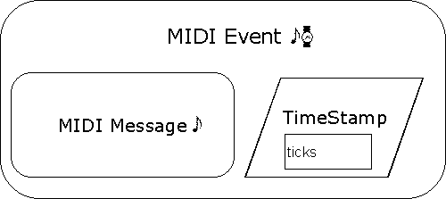
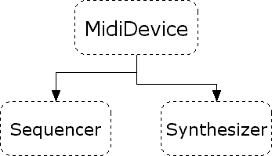
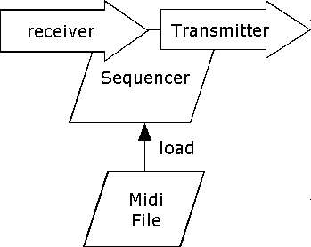
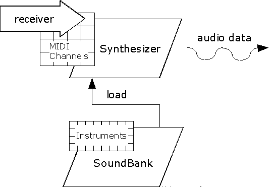
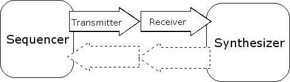
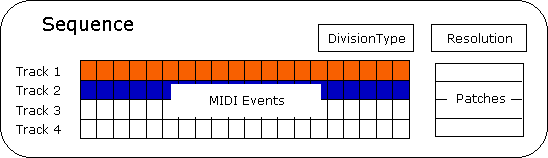
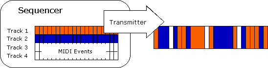

2.1 Das Midi Package
Erinnern wir uns nochmals an das Gerätekonzept:

 Wie die Legende
links schon zeigt, muß unterschieden werden zwischen:
Wie die Legende
links schon zeigt, muß unterschieden werden zwischen:
- MIDI wire protocol, das ursprüngliche MIDI protocol, dient nur der Übertragung von "Steuerbefehlen", den MIDI message, zwischen MIDI devices (raw MIDI).
- Ein standard MIDI file enthält MIDI events. Bestehend aus einer MIDI message, wie im MIDI wire protocol, aber mit zusätzlichen Informationen über das timing (time stampe in ticks).
MIDI Event

Die TimeStamp eines MidiEvents ist der theoretischer Abspielzeitpunkt in ticks (wobei der Song mit 0 beginnt).
Ein MidiEvent kappselt eine MidiMessage, wie der Konstruktor zeigt
MidiEvent(MidiMessage message, long tick)
MIDI Message
MidiMessage ist eine abstrakte Klasse die Ereignisse wie im MIDI wire protocol repräsentiert. Sie besitzen also keine timing-Informationen.
Drei MidiMessage subclasses:
- ShortMessages (Noten)
- SysexMessages (Hersteller spezifische Informationen)
- MetaMessages (z.B. Texte)
Weitere Informationen über den MIDI-Standard: MIDI Manufacturer's Association
MidiDevice
Neben der SoundCard und externen Midi-Instrumenten ist jede Software, die das MidiDevice interface implementiert eine MidiDevice. Sie besitzt mindestens
- Midi input und output port
- eine innnere Klasse MidiDevice.Info
- kann MidiMessages senden und empfangen
Die MidiDevice interface Hierachie:

Sequencer
Ein sequencer kann sequences aufnehmen und wiedergeben. Dafür besitzt er:

- transmitter zum Senden von raw-Midi events (MIDI Messages)
- receiver zum Empfangen von raw-Midi events (MIDI Messages)
- load Methode zum Laden von MIDI files (MIDI Events)
Wenn er aufnimmt, fügt er den "nackten" Midi messages
timing Informationen hinzu.
Bei der Wiedergabe durch z.B. einen Synthesizers entfernt er diese Informationen.
Somit leistet er den Übergang vom MIDI wire protocol zu standard
MIDI.
Synthesizers
Ein Synthesizer ist einzige device in diesem package, die Sound selbst erzeugt.
- Wavetable synthesis: Sample einer SoundBank werden abgespielt. Die gegewünsche Höhe wird durch pitching und die Länge looping realisiert.
- Frequency modulation (FM), additive synthesis, or physical modeling berechnen den Klang nach unterschiedlichen Algorithmen.

- Empfängt über einen receiver.
- Kontrolliert MIDI channel objects, meistens 16.
- Durch bank- und program-number (in einem Patch-Objekt gekapselt) wird jedem Midi channel ein Instrument zugeordnet (preset der Soundcard oder soundbank Datei)
Z.B. rendert der Java Sound Synthesizer die ShortMessages auf der audio device der SoundCard. Will man den entstanden audio stream z.B in eine Datei lenken, so sucht man vergebens nach einer DataLine.
2.2 Zugriff auf die Midi System Resourcen
MidiSystem
Eine Application kann von MidiSystem (muß nicht mit new erzeugt werden) folgende Devices erhalten:
- Sequencers
- Synthesizers
- Transmitters (Midi input ports)
- Receivers (Midi output ports)
- Daten aus standard MIDI files
- Daten aus soundbank files
Diese get-Methoden liefern die jeweilige default device (angewendet auf MidiSystem):
static Sequencer getSequencer() static Synthesizer getSynthesizer() static Receiver getReceiver() static Transmitter getTransmitter()
Die beiden letzten Methoden liefern externen Midi output bzw. input port. (Fehler)
Eine komplette Übersicht aller installierten devices gibt die Methode
static MidiDevice.Info[] getMidiDeviceInfo()
als array von MidiDevice.Info Objekten:
Jedes MidiDevice.Info Objekten enthält
- Name
- Version number
- Vendor (Firmenname)
- A description of the device
Z.B. sind auf meinem System folgende Midi devices installiert:
>>>java MidiPlayer -l Java Sound Synthesizer Java Sound Sequencer MIDI Mapper SB AWE32 MIDI Synth [620] SB16 MIDI-Out [330] Creative Music Synth [220] Wire: SB16 MIDI-In [330] Wire: Generator internal Midiport Wire: SB AWE32 MIDI Synth [620] Wire: SB16 MIDI-Out [330] Wire: Creative Music Synth [220] Tritonus MidiShare sequencer MidiShare MIDI client Tritonus Java sequencer
Jetzt kann ich gezielt jede device erzeugen, z.B. "Java Sound Sequencer"
MidiDevice.Info seqInfo = getMidiDeviceInfo("Java Sound Sequencer");
Sequencer sm_sequencer = (Sequencer) MidiSystem.getMidiDevice(seqInfo);
Jede Midi device muß geöffnet werden:
if (!(device.isOpen())) {
try {
device.open();
} catch (MidiUnavailableException e) {
// Handle or throw exception...
}
}
Senden einer Message an einen Receiver
Senden einer Note an z.B. das Midi-Out der SoundCard.
ShortMessage myMsg = new ShortMessage(); // Start playing the note Middle C (60), // moderately loud (velocity = 93). myMsg.setMessage(ShortMessage.NOTE_ON, 0, 60, 93); long timeStamp = -1; // Get default Receiver. Receiver rcvr = MidiSystem.getReceiver(); rcvr.send(myMsg, timeStamp);
Nachdem mit new eine neue ShortMessage erzeugt wurde, er hält sie einen Inhalt mit
void setMessage(int command, int channel, int data1, int data2)
Ein command könnte z.B. die Konstante ShortMessage.NOTE_ON sein.
void send(MidiMessage message, long timeStamp)
Die timeStamp -1 meint: Die Message soll so schnell wie möglich gesendet werden.
Verbinden von Transmitter und Receiver
Verbinden eines Sequencers mit einem Synthesizer.
Sequencer seq;
Transmitter seqTrans;
Synthesizer synth;
Receiver synthRcvr;
try {
seq = MidiSystem.getSequencer();
seqTrans = seq.getTransmitter();
synth = MidiSystem.getSynthesizer();
synthRcvr = synth.getReceiver();
seqTrans.setReceiver(synthRcvr);
} catch (MidiUnavailableException e) {
// handle or throw exception
}
Übrigens müssen bei Programmende so die decive und alle dazugehörigen transmitters und receivers geschlossen werden:
MidiDevice.close()
2.3 Abspielen, Aufzeichnen von MIDI files
Sequence
Die Sequence dient der Repräsentation des Songs einschliesslich seiner Instrumente.

- Sequence (enthält als Vektor Tracks)
- Track (enthält als Vektor MidiEvents)
- MidiEvent
Der DivisionType gibt an, wie die ticks zu interpretieren sind
- Pulses per quarter note (PPQ) oder
- ticks per frame (SMPTE time code)
mit Sequence.getDivisionType()
erfährt man, welcher Type für die Sequence gilt.
Resolution beschreibt Anzahl der ticks pro
- beat (für PPQ) bzw.
- frame (SMPTE)
Die Patch-Objekte beschreiben die Instrumente.
Sequencer
Er dient dem Abspielen oder Aufnehmen einer Sequence. Er ist während der Wiedergabe für die "Auslieferung" der Midi Messages über seinen Transmitter verantwortlich:

Es liegt somit in der Natur das Sache, dass Messages mit gleicher TimeStamp nicht gleichzeitig gesendet werden können. Der Sequencer ist wesentlich für unangenehme timing Schwankungen verantwortlich. Abweichungen unter 5 Millisekunden werden in der Regel nicht bemerkt.
Ein MIDI file z.B. kann nur als Sequence in einen Sequencer geladen werden (Beispiel):
try {
File myMidiFile = new File("seq1.mid");
// Construct a Sequence object, and
// load it into my sequencer.
Sequence mySeq = MidiSystem.getSequence(myMidiFile);
sequencer.setSequence(mySeq);
} catch (Exception e) {
// Handle error
}
Abspielen eines MIDI files
geschieht dann durch
void start() void stop()
des Sequencers.
Recording und Saving einer Sequence
- Mit MidiSystem.getSequencer einen neuen Sequencer anlegen.
- “Wiring” der Midi connections:
- Neue Sequence erzeugen mit
mySeq = new Sequence(Sequence.PPQ, 10);
Argumente sind divisionType and a timing resolution. - Sequencer.setSequence
- Sequencer.recordEnable
- Sequencer.startRecording
- Sequencer.stopRecording
- Midi Datei speichern mit MidiSystem.write
2.4 Fehler in Java Sound
- Zugriff auf die externen Midi Ports und den Synthesizer der SoundCard funktionierte bisher nicht. Lösung: WireProvider.